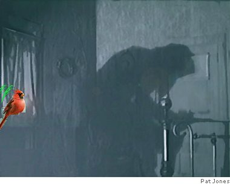

Richard Broderick
The Old Friend
He aged like a dog: one day, he was fine,
a fit, smiling still-handsome man of 80.
The next time I saw him, he was stooped
and shuffling, his face hollowed out by pain.
Now comes word of pancreatic cancer,
the tumor “aggressive,” bending him
to its will, eating him alive. What do you say
at a time like this? “I’m sorry?” “We'll miss you?”
Already my words travel forward
to the moment, a few weeks from now,
when he’ll no longer be around to hear anything.
So I keep silent, sitting beside the window,
listening to the cry of a cardinal trying
to kick-start spring into turning over.

Picking the Apostles
At first they can’t believe their ears.
They are amazed. They are always amazed.
The argue among themselves — what did he say? —
voices muffled with excitement. They ask him again,
faces strained, hoping for a different response.
They are just like us. They bargain. They quibble.
They parse words. They hear only what
they want to hear. You didn’t really mean it.
You’re not leaving. The cancer hasn’t spread.
I will be spared. But the answer is the same.
Abandon your mother. Abandon your father.
Abandon your children. Renounce your home,
your country, your tribe, your brothers,
even the name you were given at birth.
Life exchanged for death. Death exchanged for life.
One by one they begin to slip away, eyes
on the ground as if searching for something.
One by one they leave until all that’s left are
a dozen too dense, too slow to escape in time.
Richard Broderick’s poems have appeared in Notre Dame Review, Laurel Review, Prairie Schooner, Greensboro Review, Poetry East, and many other publications, as well as in numerous anthologies, most recently The Book of Irish American Poetry from Notre Dame Press. His books, Night Sale and Woman Lake, are both published by New Rivers Press.
|